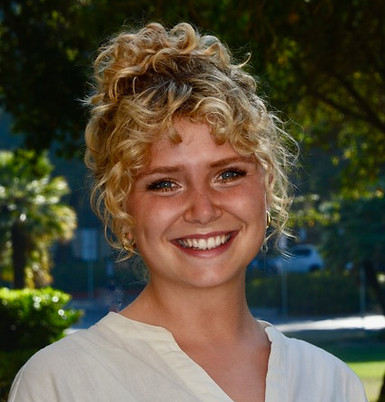

PhD Candidate
Political Science
Stanford University
maemac@stanford.edu
I am a Ph.D. Candidate in Political Science and Knight-Hennessy Scholar at Stanford University. I study the political economy of forced displacement and international aid.
My research focuses on solutions to protracted refugee situations, contexts in which at least 25,000 refugees have lived in an asylum country for five years or more. My current book project examines the conditions under which refugee crises "end," asking when displaced populations return home, integrate into the host country's economy and society, resettle in third countries, or otherwise remain in asylum with temporary legal status and/or in camps.
In addition, I work on projects focused on livelihoods opportunities for refugees in East Africa. These include studies of Kenya's 2021 refugee integration policy, an International Rescue Committee livelihoods program for urban refugees in Nairobi and Kampala, and a longitudinal panel survey on the effects of USAID cuts in Kakuma camp, Kenya. Methodologically, I combine quantitative and qualitative approaches, including design-based causal inference, randomized controlled trials, surveys, archival research, and field interviews. You can find out more about me and my research in this article from the Stanford King Center on Global Development.
At Stanford, I am a Graduate Fellow at the Immigration Policy Lab, a group of researchers that evaluate and design policies surrounding the integration of immigrants and refugees worldwide. In 2024, I was awarded the Ric Weiland Graduate Fellowship, which recognizes innovation and excellence among 20 Ph.D. students across Stanford's School of Humanities & Sciences. My research has been generously supported by J-PAL/IPA Displaced Livelihoods Initiative, King Center on Global Development, Freeman Spogli Institute for International Studies, and Institute for Economic Policy Research, among others.
Before beginning my doctoral studies, I worked with refugee organizations in Greece and the UK through Movement on the Ground, CalAid, and The Entrepreneurial Refugee Network. I also worked as a researcher at YouGov, where I conducted mixed-methods research for the UK government and public sector. I hold a B.A. (Double First Class) in Philosophy, Politics and Economics from the University of Oxford.
If you're a prospective applicant to the Stanford Political Science Ph.D. program, the Knight-Hennessy Scholars Program, or the P.P.E. program at Oxford, feel free to reach out for advice. You can contact me at maemac [at] stanford [dot] edu.
Lisa Blaydes, James D. Fearon, and Mae MacDonald. 2025. "Understanding Intimate Partner Violence." Annual Review of Political Science 28:351–374.
Push, Not Peace: Reconsidering the Drivers of Refugee Return.
Job market paper.
Support for Refugee Integration in a Major Refugee-Hosting Country: Evidence from Kenya.
With Adam Lichtenheld. Under review.
Preprint.
Building Business Networks to Strengthen Refugee Economic and Social Integration.
With Sigrid Weber, Adam Lichtenheld, Jessica Wolff, Alex Wendo, Annet Adong, Clare Clingain, David Musiime, Andrew Zeitlin, and Jens Hainmueller.
IRC Re:BUiLD project website.
Does US Retrenchment Open the Door for China? Evidence from Trump's Foreign Policy Shocks.
Can Hearts and Minds Be Lost? Aid Withdrawal, Attribution, and Public Opinion.
Examining the Link between Aid and Support for Refugees: U.S. Aid Cuts and Kakuma Camp, Kenya.
How Refugee Crises End.
Book project.
Mae MacDonald, Adam Lichtenheld, and Tolossa Asrat. 2025. "Kenya Embraces Refugee Integration – and Citizens Are on Board." The New Humanitarian.